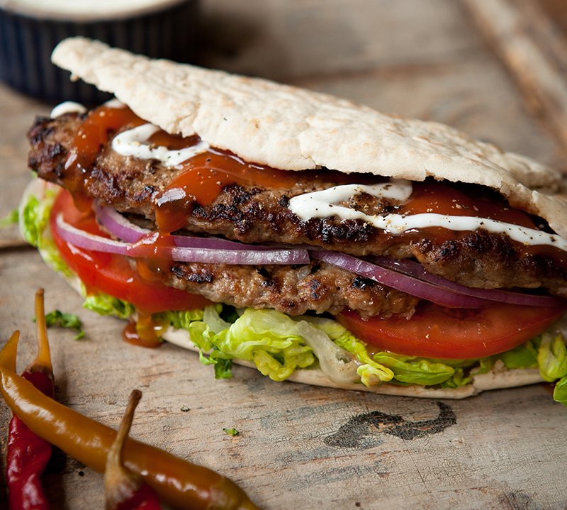
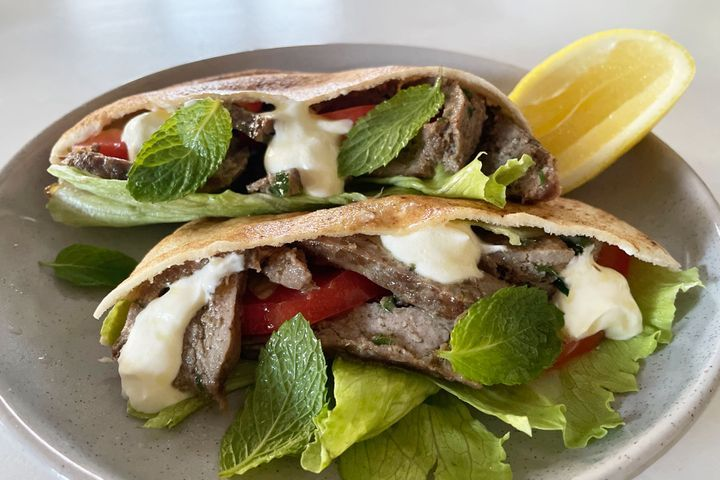
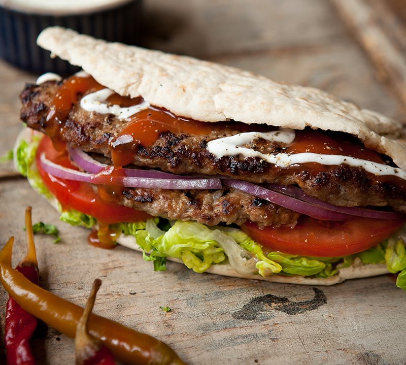
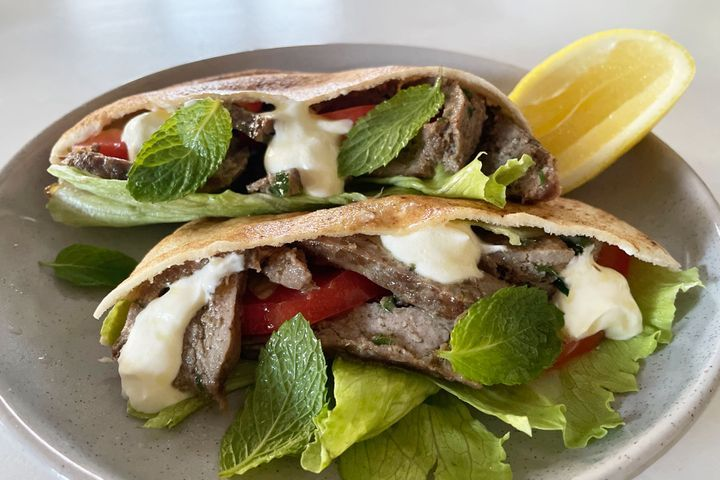

Doner Kebab recipe
 



Get back to homepage!
About Doner Kebab
Doner Kebab- döner or döner kebab, also spelled as döner kebab, is a dish of Turkish origin made
of meat cooked on a vertical rotisserie. Seasoned meat stacked in the shape of an inverted cone is turned slowly on the
rotisserie, next to a vertical cooking element. The operator uses a knife to slice thin shavings from the outer layer of the
meat as it cooks. The vertical rotisserie was invented in the 19th-century Ottoman Empire, and dishes such as the Arab shawarma,
Greek gyros, Canadian donair, and Mexican al pastor are derived from this.
Ingredients
-
Beef or lamb - get 15% fat for best results. If you inspect those kebab shop meats closely,
you will see they are DRIPPING with fat!! Ours is not as fatty, but when we tried it with lean meat, it just wasn't the same.
Also remember, the flavour of meat is all in the fat. Mix lamb fat into lean beef, and you'd swear you're eating lamb!
-
Streaky Bacon - the secret ingredient, as discovered by Kenji at Serious Eats whose Gyros recipe we used
as a base for ours. It doesn't make the meat taste bacony, but it adds salt into the meat and most importantly, it adds fat.
It is key, do not skip it!
-
NON-PORK SUBSTITUTES for bacon - two options to replicate the purpose of bacon in this recipe:
1. If your meat is already sufficiently fatty, use turkey bacon; or
2. Add duck fat or goose fat + extra 100g/4 oz meat + 1/2 tsp salt.
-
Spices - a mix we figured out ourselves by sampling the meat from our favourite kebab shops.
-
Onion and garlic - essential flavour base!
Process of making Doner Kebab
Here are some instructions to make Doner Kebab at home easily!
-
Heat the oven to 200C/180C fan/gas 6. Tip all the ingredients except the oil into a food processor with a large pinch
of salt and lots of ground pepper. Pulse until everything is combined and chopped together. You can also just squish
everything together in a bowl but this will give you a looser finish.
-
Oil a large sheet of foil, tip the meat mix in the middle and mould to a very thick sausage, roughly the shape of an aubergine.
Roll up the foil tightly, twisting up the ends to create a Christmas cracker shape.
-
Lay on a shallow roasting tin and roast in the oven for 35-40 mins, turning occasionally, or until a digital cooking
thermometer reads 75C when pierced in the middle. Leave the kebab to cool a little, then unwrap the foil.
Place back on the tray and brown under the grill or with a blowtorch.
-
Place on a board and carve into thin slices. For full doner mode, you can hold the kebab up with a roasting fork or
metal skewer and carve. Serve with warm pitta bread and any of the other accompaniments, including our chilli sauce
and garlic yogurt sauce.
Top Tips and notes for Bacon
-
Note on BACON and authenticity - As doner kebabs are mainly from Muslim countries,
bacon might seem out of place given pork is not consumed for religious reasons.
The reason it is included is to make this recipe accessible for home cooks.
Traditional doner kebab meat is made with loads of animal fat.
When you watch You Tube videos of the layered version of kebab meat, they thread a layer of meat
(like chicken) then they literally COVER that layer with chopped fat then thread chicken on, and again fat. SO MUCH FAT!
Using bacon is a shortcut method and more accessible to ordinary home cooks!
All these informations above are taken from
this website!